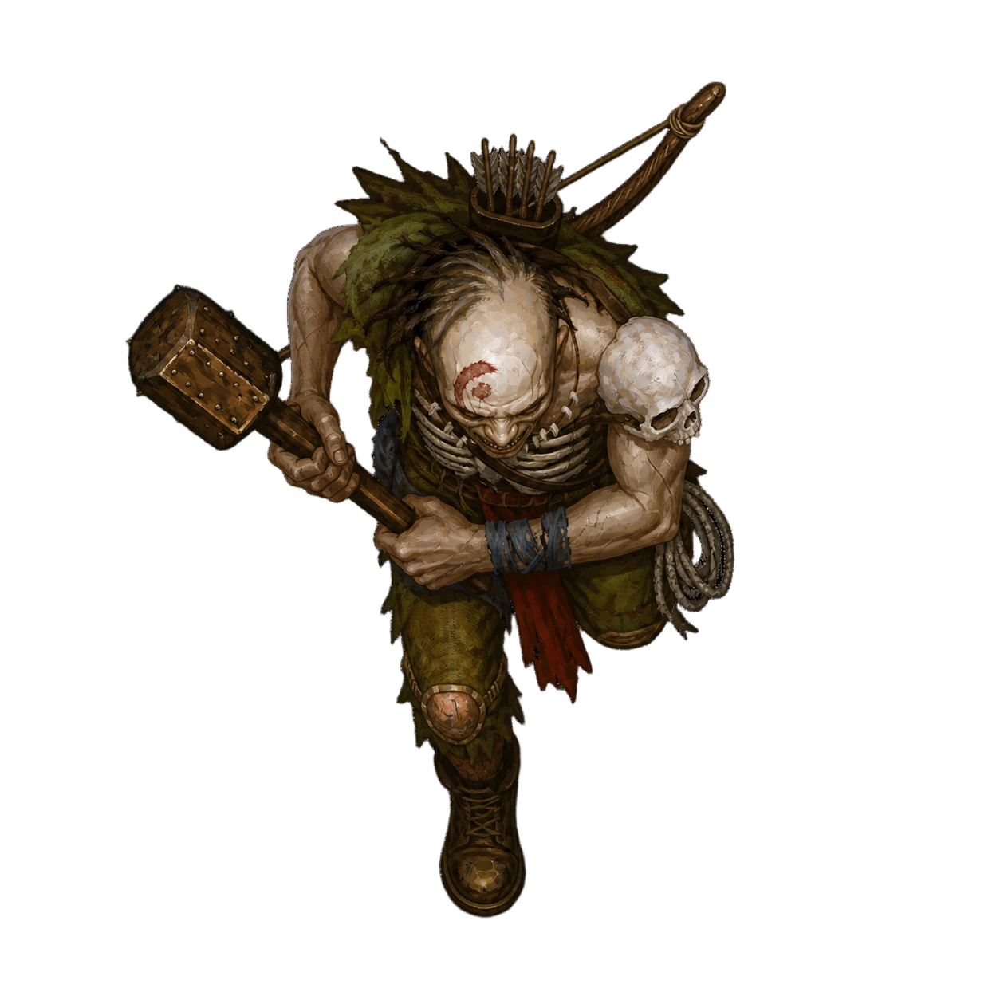

ROOF_ON · odniesienie

ROOF_OFF · podgląd z przełączanym dachem


Metoda: geometria SVG → wnętrze → dach
Przełącz dach, żeby porównać położenie foteli. Postacie mogą lekko wystawać poza nadwozie.

Przód auta jest skierowany w dół. Domyślnie postacie mają zwykły rozmiar pasażera 0,5 kratki. Stan oceny i pliki · Końcowe prompty